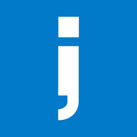

Senior Software Developer (Remote)
Dow Jones Via Intive
- Enhanced Barrons.com, a leading financial news platform, with new features that improved site performance and user navigation experience.
- Ensure compliance with accessibility (A11Y) standards by identifying and resolving usability issues.
- Develop and maintain scalable backend services with Node.js and MongoDB, supporting website functionality and efficient data management.
- Collaborate closely with the design team to implement intuitive and accessible UX solutions.
Nov 2020 - present